Okul projeleri ve mobilya tasarımlarından bir seçki. Bir karta tıklayınca projenin tam paftası açılır.
A selection of studio projects and furniture designs. Click a card to open the project’s full board.
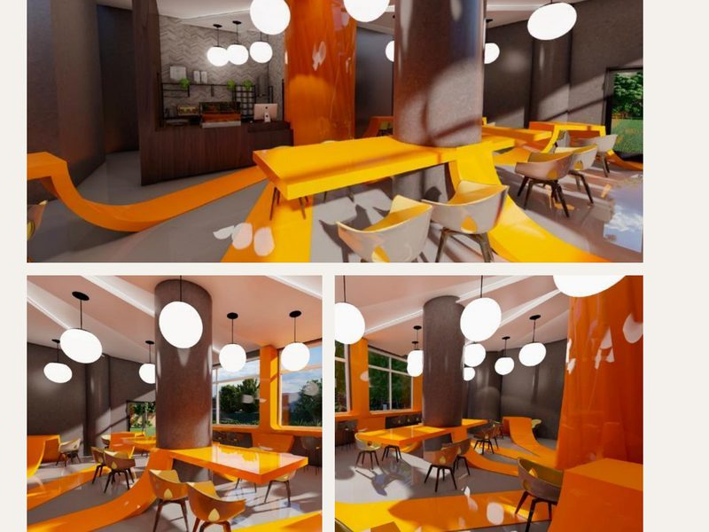
01 Kafe Projesi — Arbre
01 Café Project — Arbre
2023 · Mekân Tasarımı
2023 · Interior
Ağaç kökünden ilham alan bir kafe. Zeminde yükselip alçalarak kullanım birimlerine dönüşen kök çizgileri, izdüşümleriyle birlikte aydınlatmanın da parçası oluyor.
A café inspired by tree roots. Root lines rise and fall across the floor to become seating and service units, and their projection carries up into the lighting.
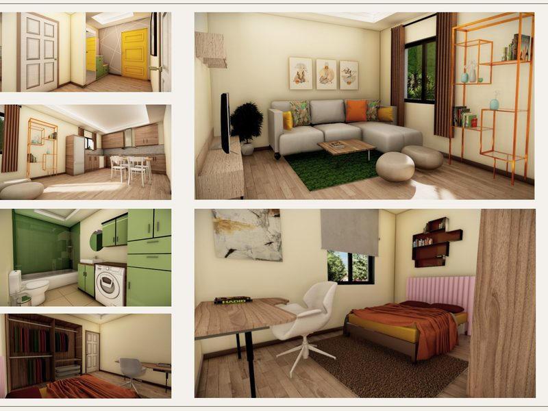
02 Konut Projesi
02 Residence
2023 · Mekân Tasarımı
2023 · Interior
Kariyerine odaklanmış, yalnız yaşayan bir kadın için tasarlanmış konut. Minimalist ve fonksiyonel kurgu, doğal ışık ve sakin dokularla verimli bir çalışma alanını dinlenme sığınağıyla birleştiriyor.
A home for a career-focused woman living alone. A minimal, functional layout pairs an efficient workspace with a calm retreat, supported by daylight and soft textures.
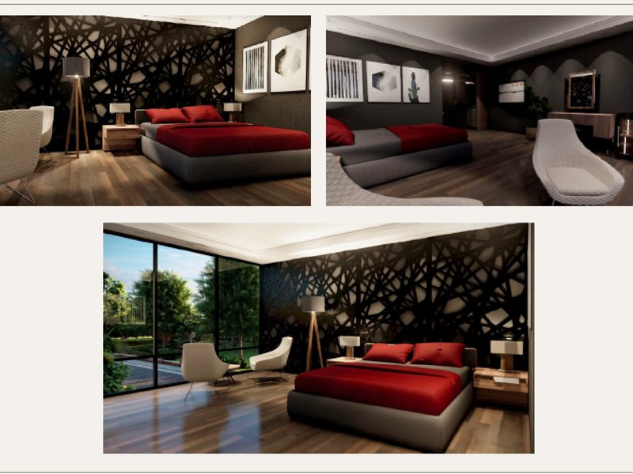
03 Otel Odası Projesi
03 Hotel Room
2023 · Mekân Tasarımı
2023 · Interior
İş seyahatindeki profesyoneller için konfor ve verimliliği birlikte kuran oda. Zemin, aydınlatma ve mobilya seçimlerinde sade bir estetik, her detayda işlevsel bir karşılık.
A room built around comfort and efficiency for business travellers. Flooring, lighting and furniture stay understated, with every detail serving a purpose.
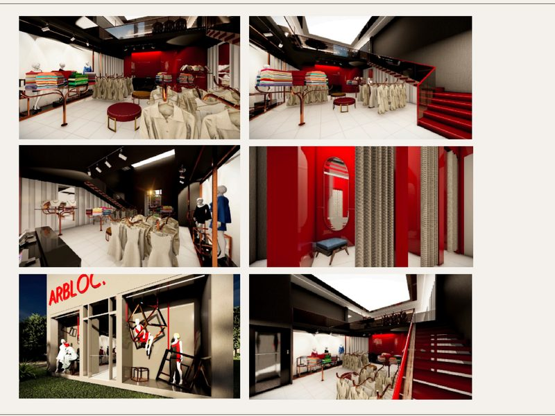
04 Mağaza Projesi — Arbloc
04 Retail Store — Arbloc
2023 · Mekân Tasarımı
2023 · Interior
Adını köşeli ve blok formların birleşiminden alan mağaza. Dallanan ağaç formundan türeyen satış birimlerinin yanında 6 deneme kabini, depo ve asma kat yer alıyor.
A store named after the meeting of angular and block forms. Display units branch out like a tree, alongside six fitting rooms, storage and a mezzanine.
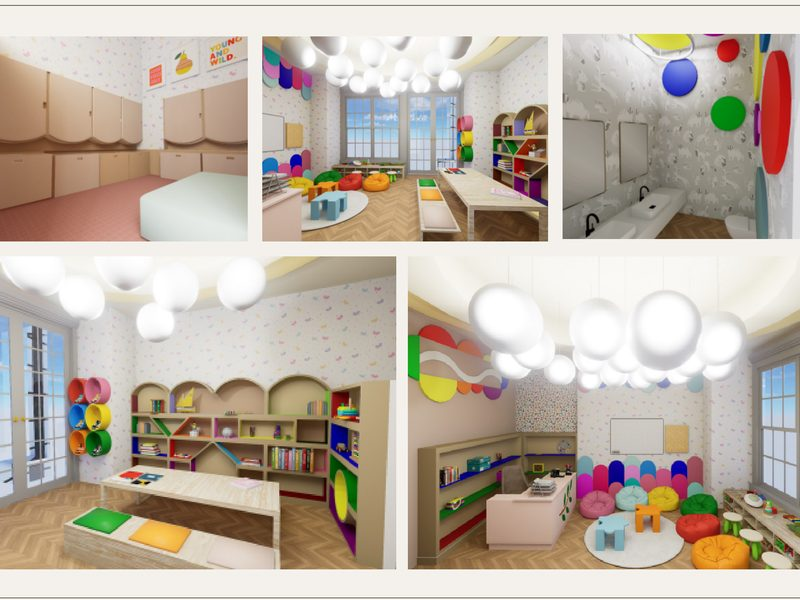
05 Anasınıfı Projesi
05 Kindergarten
2024 · Mekân Tasarımı
2024 · Interior
Çocukların gelişim sürecine göre kurgulanmış oyun, ders ve depolama alanları. Bahçeye kolay geçiş için ayakkabılık, öğretmen için ayrı bir çalışma masası düşünüldü.
Play, study and storage areas shaped around how children develop, with a shoe area for easy garden access and a separate desk for the teacher.
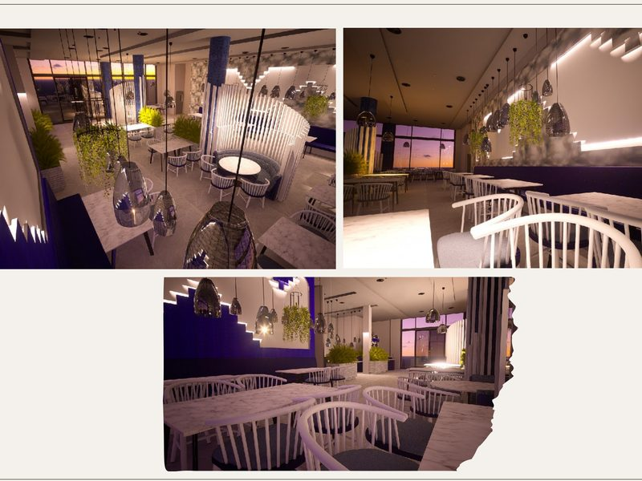
06 Restoran Projesi
06 Restaurant
2024 · Mekân Tasarımı
2024 · Interior
50 kişilik bir balık restoranı. Deniz temasını doğal ahşap ve sabit oturma düzeniyle kuran mekânda, mutfak ve depo kurgusu operasyonel verimliliği gözetiyor.
A 50-seat fish restaurant. Natural timber and fixed seating carry the sea theme, while the kitchen and storage are planned for operational efficiency.
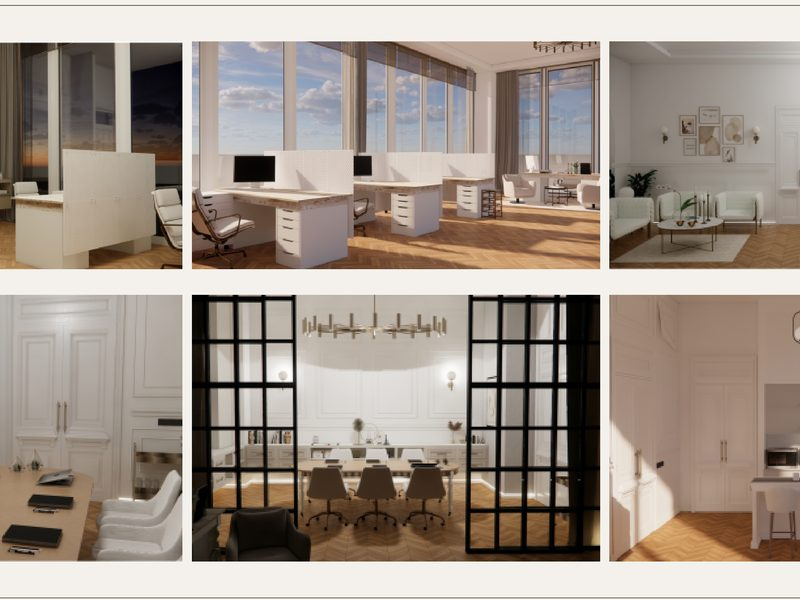
07 Ofis Projesi
07 Office
2024 · Mekân Tasarımı
2024 · Interior
Yat tasarımı üzerine çalışan bir mimarlık ofisi. French Country estetiğiyle kurgulanan mekânda bekleme alanı, toplantı odası, 4 kişilik açık ofis, dinlenme alanı ve kitchenette bulunuyor.
An architecture office working on yacht design. A French Country palette frames the waiting area, meeting room, four-person open office, break area and kitchenette.
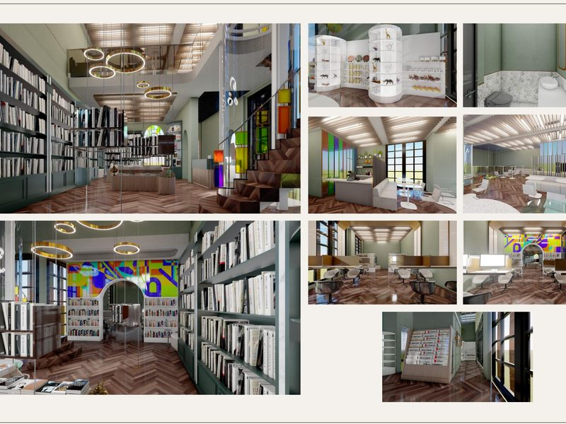
08 Kitabevi Projesi — Tiempolibro
08 Bookstore — Tiempolibro
2024 · Mekân Tasarımı
2024 · Interior
Adı “Zamanın Kitabı” anlamına gelen kitabevi. Alt katta 12 satış birimi, 16 kişilik çalışma alanı ve dijital erişim; üst katta kafe ve galeri boşluğu. Vitray ve ahşap nostaljik bir atmosfer kuruyor.
A bookstore whose name means “the book of time”. Twelve display units, a 16-seat study area and digital access downstairs; a café and gallery void above. Stained glass and timber give it a nostalgic air.
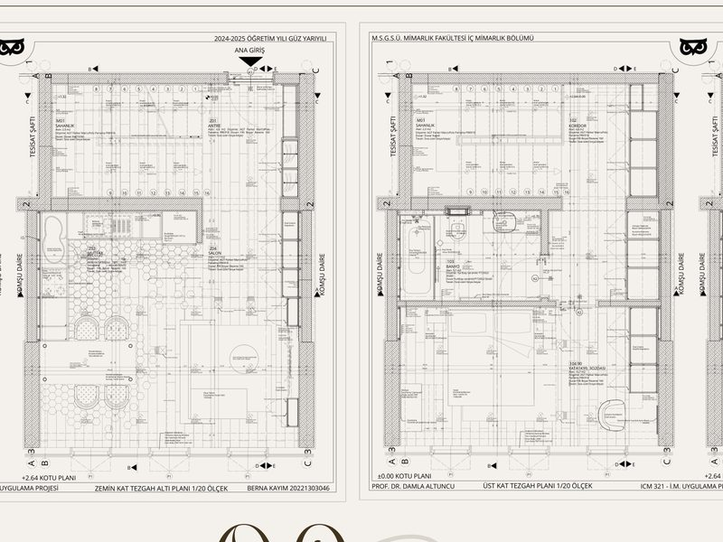
09 Uygulama Projesi
09 Construction Documentation
2025 · Teknik Çizim
2025 · Technical
Bir konutun uçtan uca uygulama dosyası. Kot planları, tavan planları, kesitler ve detaylar; döşeme, duvar ve tavan bitişleri ürün ve marka düzeyine kadar tariflendi.
A complete construction documentation set for a dwelling: level and ceiling plans, sections and details, with floor, wall and ceiling finishes specified down to product and brand.
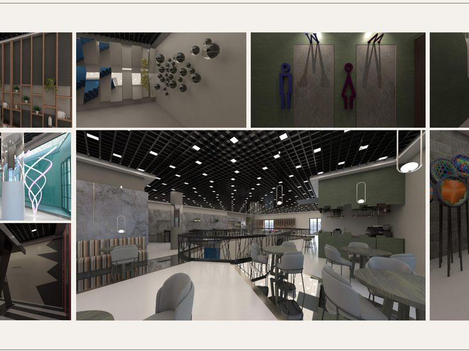
10 Sergi Salonu — Lacuna
10 Exhibition Hall — Lacuna
2024 · Mekân Tasarımı
2024 · Interior
Gestalt psikolojisinden beslenen bir sergi salonu. Esnek yerleşim ve sade öğeler dikkati eserlere yönlendirirken, ziyaretçiyi pasif izleyiciden aktif katılımcıya dönüştürüyor.
An exhibition hall drawing on Gestalt psychology. Flexible layouts and restrained elements keep attention on the work, turning the visitor from observer into participant.
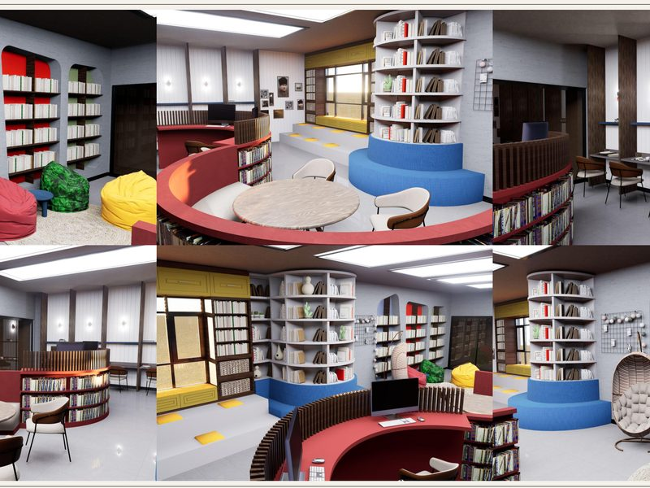
11 Z-Kütüphane Projesi
11 Z-Library
2025 · Mekân Tasarımı
2025 · Interior
Çatalca Çanakça Ortaokulu için Harezmi Eğitim Modeli kapsamında tasarlanan kütüphane. Atölye, robotik kodlama, AR/VR ve okuma alanları; puflu köşeler, salıncaklı dinlenme ve vitray detaylar.
A library for Çanakça School in Çatalca, developed under the Harezmi education model. Workshop, robotics, AR/VR and reading zones, with beanbag corners, swing seats and stained-glass details.
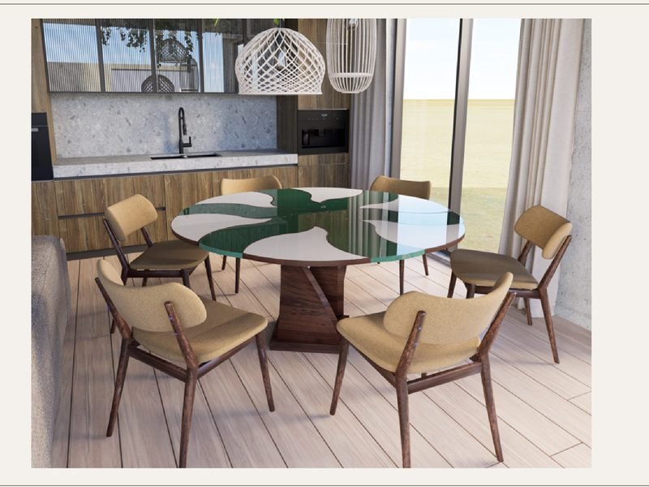
12 Yemek Masası — Peruna
12 Dining Table — Peruna
2025 · Mobilya Tasarımı
2025 · Furniture
Bulgar mitolojisindeki Perun ve Perperuna figürlerinden esinlenen açılabilir masa. Kapalı hali çekirdek aileyi, açıldıkça büyüyen form baharı ve ailenin genişlemesini anlatıyor.
An extendable table inspired by Perun and Perperuna from Bulgarian mythology. Closed, it stands for the nuclear family; as it opens, the form tells of spring and a growing household.
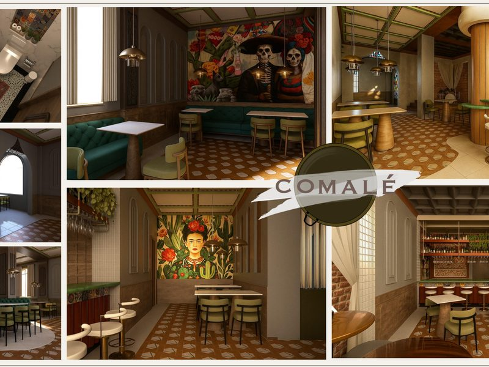
13 Meksika Restoranı — Comale
13 Mexican Restaurant — Comale
2025 · Mekân Tasarımı
2025 · Interior
Geleneksel Meksika kültürünü brütal etkiler ve sade malzemeyle buluşturan restoran. Beton dokular ve ham yüzeyler, rustik ahşap detaylar ve sıcak tonlu aydınlatmayla dengeleniyor.
A restaurant meeting traditional Mexican culture with brutalist gestures and plain materials. Concrete textures and raw surfaces are balanced by rustic timber and warm lighting.
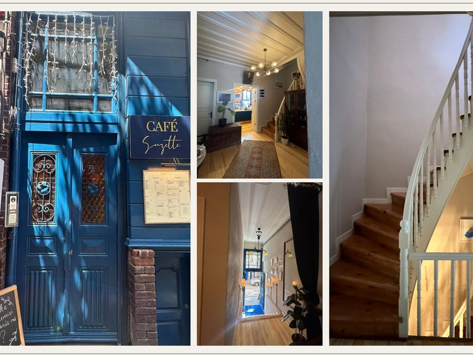
14 Rölöve — Köşk, Moda
14 Measured Survey — Moda Mansion
2025 · Rölöve
2025 · Survey
Kadıköy Moda’da tarihi bir köşkün mevcut durumunun belgelenmesi. Plan, kesit ve cephe çizimleri detaylı ölçümlerle hazırlandı; restorasyon ve yeniden işlevlendirme süreçlerine kaynak oluşturuyor. Grup çalışması.
Documentation of a historic mansion in Kadıköy, Moda. Plans, sections and elevations were drawn from detailed measurements, forming a resource for future restoration. A team project.
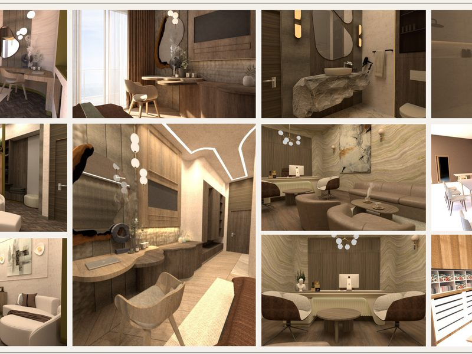
15 Butik Otel — Equilia
15 Boutique Hotel — Equilia
2026 · Mekân Tasarımı
2026 · Interior
Seul’ün yoğun kent dokusunda “homeostasi” kavramı üzerine kurulu holistik bir butik otel. 3 katta 8 standart oda ve 2 süit; spa merkezi, meditasyon alanları, havuz ve rooftop bar.
A holistic boutique hotel in Seoul’s dense urban fabric, built on the idea of homeostasis. Three floors hold eight standard rooms and two suites, plus a spa, meditation areas, a pool and a rooftop bar.
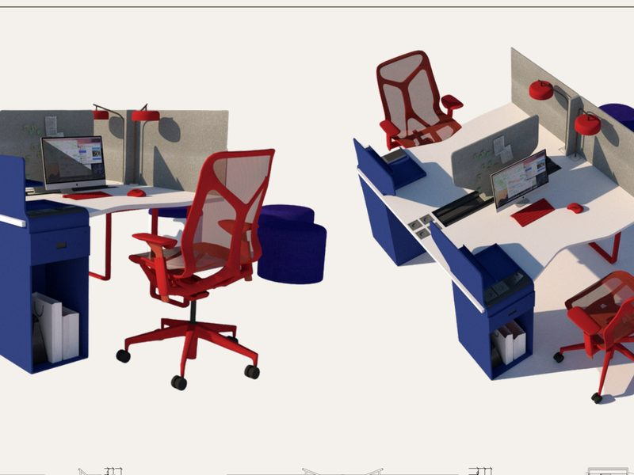
16 Workstation — Core
16 Workstation — Core
2026 · Mobilya Tasarımı
2026 · Furniture
İki kişilik bir ofis mobilyası. Bireysel odaklanma için mahrem alanlar sunarken, gerektiğinde birlikte çalışmayı ve fikir alışverişini destekleyen esnek bir kurguya sahip.
A two-person office furniture system. It offers enclosure for individual focus while opening up for shared work and exchange when needed.
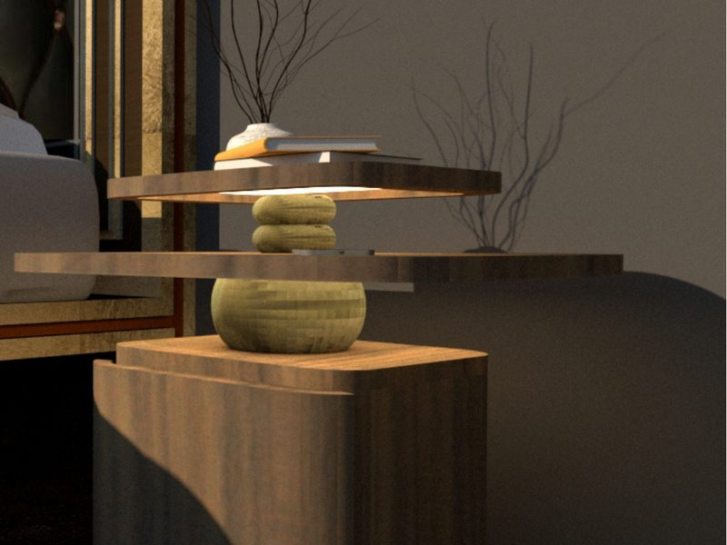
17 Komodin — Eşik
17 Nightstand — Eşik
2026 · Mobilya Tasarımı
2026 · Furniture
Archanel Design kapsamında tasarlanan bir geçiş mobilyası. Uyku ile uyanıklık arasındaki eşiği temsil eden katmanlı form, entegre aydınlatmasıyla günü bilinçli bir ritüelle sonlandırmayı öneriyor.
A transition piece designed within Archanel Design. Its layered form marks the threshold between waking and sleep, and integrated lighting turns ending the day into a deliberate ritual.
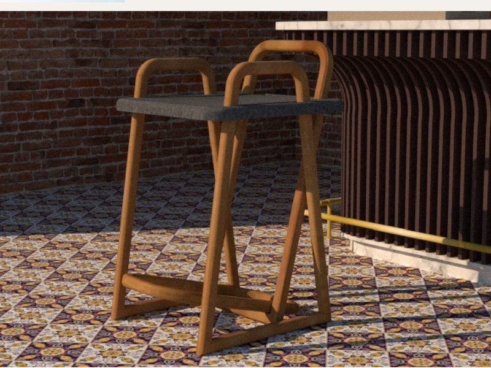
18 Bar Taburesi — Nest
18 Bar Stool — Nest
2026 · Mobilya Tasarımı
2026 · Furniture
Ek bağlantı elemanı gerektirmeyen, iç içe geçmeli bir bar sandalyesi. Geçme sistemi montajı kullanıcı için aktif bir deneyime dönüştürüyor; minimal ahşap iskelet ve geometrik estetik.
A bar stool whose interlocking structure needs no additional fixings. The joinery turns assembly into an active experience, on a minimal timber frame.
{kind=link}
{kind=link}
{kind=link}
{kind=link}
{kind=link}
{kind=link}
{kind=link}
{kind=link}
{kind=link}
{kind=link}
{kind=link}
{kind=link}
{kind=link}
{kind=link}
{kind=link}
{kind=link}
{kind=link}
{kind=link}